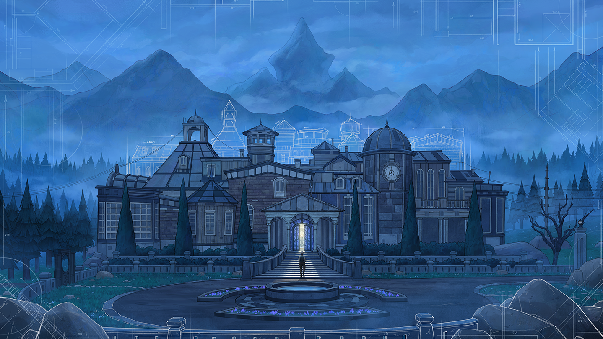

You are the heir to your Grandfathers mansion. This mansion contains 45 rooms that transform into different rooms every day. If that wasn't already annoying enough, you are not allowed to claim your inheritance until you reach the mansions rumored 46th room.
Everyday, you are allowed to enter the mansions foyer and chose one of the three directions to begin your journey. After choosing a door, you will get to chose 1 of 3 rooms to be drafted on the other side of said door. The mansions layout is 8 rooms tall by 5 rooms wide. Your goal is to make it to the other end of the mansion to the middle of row eight. While exploring you will likley cut yourself off by drafting rooms with no exits or encountering locked doors that you need keys to open. This is only a poorly described explination of the game and it goes so much deeper compared to what I said.